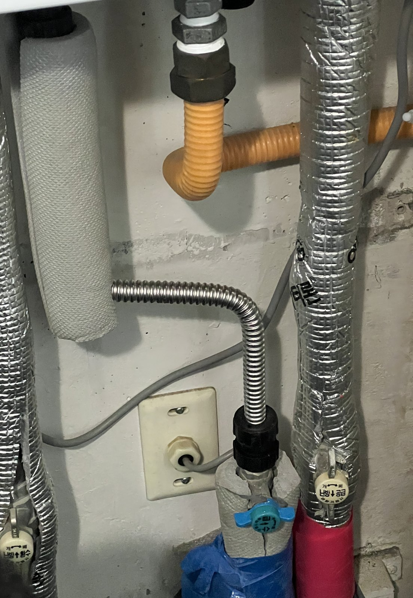
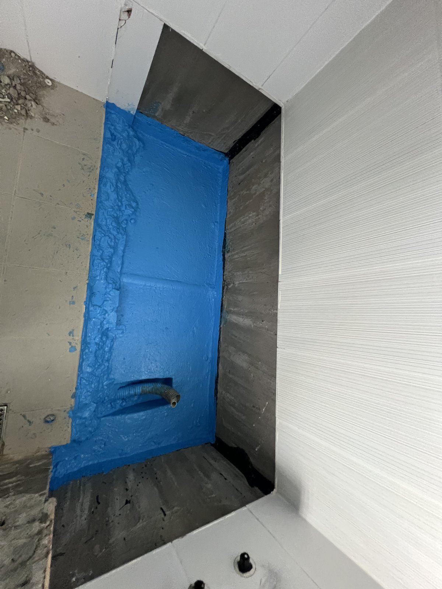
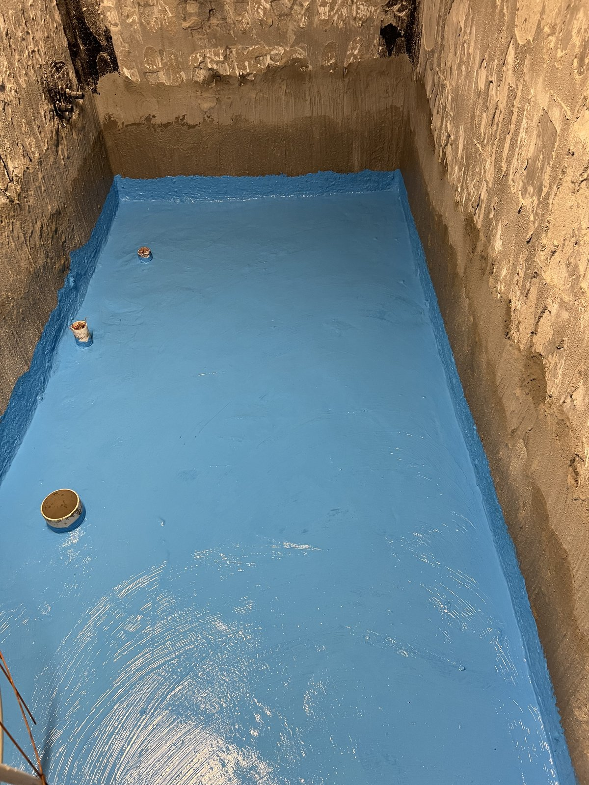

← 현장 기록 목록
 바닥·미장
대전 유성구 관평동 하이츠빌아파트 확장부 난방 배관·미장｜철거한 창가 바닥에 단열재와 배관을 깔고 미장으로 덮기
대전 유성구 관평동 하이츠빌아파트 한 세대의 방·거실 창가 확장부 바닥 작업입니다. 확장부 바닥을 걷어 낸 자리에 단열재와 난방 배관을 깔고 미장으로 덮었고, 방 우수관 1곳 작업과 문 앞 바닥 부분 미장도 함께 했습니다. 실제 사진 9장으로 소개합니다.
바닥·미장
대전 유성구 관평동 하이츠빌아파트 확장부 난방 배관·미장｜철거한 창가 바닥에 단열재와 배관을 깔고 미장으로 덮기
대전 유성구 관평동 하이츠빌아파트 한 세대의 방·거실 창가 확장부 바닥 작업입니다. 확장부 바닥을 걷어 낸 자리에 단열재와 난방 배관을 깔고 미장으로 덮었고, 방 우수관 1곳 작업과 문 앞 바닥 부분 미장도 함께 했습니다. 실제 사진 9장으로 소개합니다.
 방수·설비
대전 노은동 열매마을 욕조 철거 자리 방수·바닥 부분 미장｜욕조를 걷어 낸 욕실과 바닥 바탕 정리
대전 유성구 노은동 열매마을 작업입니다. 욕실 욕조를 걷어 낸 자리의 바닥과 벽 아래쪽에 파란색 방수 도막을 바르고, 집 안 바닥 몇 군데를 부분 미장으로 고르게 메웠습니다. 실제 사진 4장으로 소개합니다.
방수·설비
대전 노은동 열매마을 욕조 철거 자리 방수·바닥 부분 미장｜욕조를 걷어 낸 욕실과 바닥 바탕 정리
대전 유성구 노은동 열매마을 작업입니다. 욕실 욕조를 걷어 낸 자리의 바닥과 벽 아래쪽에 파란색 방수 도막을 바르고, 집 안 바닥 몇 군데를 부분 미장으로 고르게 메웠습니다. 실제 사진 4장으로 소개합니다.
DAEJEON AREA RECORD
대전 유성구 현장 기록
만물인테리어가 대전 유성구에서 작업한 현장 기록 5건을 최신순으로 모았습니다. 각 기록에 적힌 동네·단지와 작업 내용 그대로이며, 동·호수와 고객 정보는 공개하지 않습니다.
- 기록
- 5건
- 누수·배관
- 3건
- 인테리어
- 2건
- 기록 날짜
- 2026-08-30 ~ 2026-11-18
기록에 적힌 동네: 관평동 1건 · 교촌동 1건 · 노은동 1건 · 상대동 1건 · 죽동 1건
바닥·미장
대전 유성구 관평동 하이츠빌아파트 확장부 난방 배관·미장｜철거한 창가 바닥에 단열재와 배관을 깔고 미장으로 덮기
대전 유성구 관평동 하이츠빌아파트 한 세대의 방·거실 창가 확장부 바닥 작업입니다. 확장부 바닥을 걷어 낸 자리에 단열재와 난방 배관을 깔고 미장으로 덮었고, 방 우수관 1곳 작업과 문 앞 바닥 부분 미장도 함께 했습니다. 실제 사진 9장으로 소개합니다.
방수·설비
대전 노은동 열매마을 욕조 철거 자리 방수·바닥 부분 미장｜욕조를 걷어 낸 욕실과 바닥 바탕 정리
대전 유성구 노은동 열매마을 작업입니다. 욕실 욕조를 걷어 낸 자리의 바닥과 벽 아래쪽에 파란색 방수 도막을 바르고, 집 안 바닥 몇 군데를 부분 미장으로 고르게 메웠습니다. 실제 사진 4장으로 소개합니다.

방수·설비 대전 교촌동 미메이드아파트 보일러 아래 온수 배관 보수｜금속 주름관으로 다시 연결 대전 유성구 교촌동 미메이드아파트 작업입니다. 보일러 아래 온수 배관이 샌다는 연락을 받고, 감아 두었던 연결 부분을 풀어 새는 구간을 금속 주름관으로 다시 연결했습니다. 실제 사진 3장으로 소개합니다.
방수·설비 대전 죽동 예미지아파트 욕실 도막 방수·드레스룸 환기구 코어｜한 세대의 두 공정 대전 유성구 죽동 예미지아파트 세대에서 진행한 두 가지 작업입니다. 욕실 바닥 구간의 도막 방수와 드레스룸 벽 상단에 환기구 자리를 뚫는 코어 작업을 실제 사진 6장으로 소개합니다.
방수·설비 대전 상대동 아이파크시티 욕실 방수｜회색 1차 방수 위에 파란 도막을 입히기까지 대전 유성구 상대동 대전아이파크시티 세대의 욕실 방수 기록입니다. 바닥과 벽 아래쪽에 회색 1차 방수층을 바르고 배수구 자리를 막아 둔 상태에서, 그 위에 파란색 도막 방수를 입히기까지 8월 29·30일 사진 8장으로 소개합니다.누수 원인과 필요한 공사 범위는 현장 확인 후 안내합니다.
예상 범위는 참고용이며, 최종 범위·금액은 실측 후 확정됩니다.
누수 증상 남기기 인테리어 상담 전화 010-2397-8629